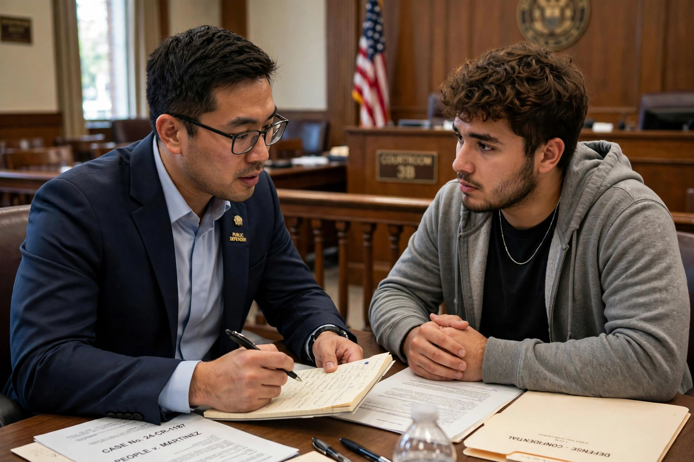

The right to counsel is a legal right of a person who has been charged with a crime to be assisted by a lawyer. In the United States it is guaranteed by the Sixth Amendment, which provides that "the accused shall enjoy the right … to have the Assistance of Counsel for his defence." Where a defendant cannot afford a lawyer, the state must provide one.

A public defender conferring with a client in a courtroom.
In Powell v. Alabama (1932), the Supreme Court held that counsel must be provided in capital cases involving indigent defendants. In the landmark case Gideon v. Wainwright (1963), the Court unanimously held that the Sixth Amendment, applied to the states through the Fourteenth, requires states to appoint counsel for indigent defendants in felony cases; Clarence Gideon's handwritten petition led to his retrial with a lawyer and acquittal. Argersinger v. Hamlin (1972) extended the right to any case in which imprisonment may actually be imposed. The right attaches at the initiation of formal proceedings and covers critical stages including arraignment, trial, sentencing, and the first appeal. Miranda v. Arizona (1966) additionally requires that detained suspects be informed of their right to an attorney during custodial interrogation. A related doctrine, from Strickland v. Washington (1984), allows convictions to be challenged for ineffective assistance of counsel.
The right to legal assistance is recognised in Article 6 of the European Convention on Human Rights and Article 14 of the International Covenant on Civil and Political Rights, which guarantee the right to defend oneself through legal assistance of one's own choosing, provided free where the interests of justice require. Most legal systems provide some form of legal aid and public defense, though the adequacy of funding and quality of appointed counsel remain widely debated.
United States Reports (Supreme Court decisions cited); texts on criminal procedure.